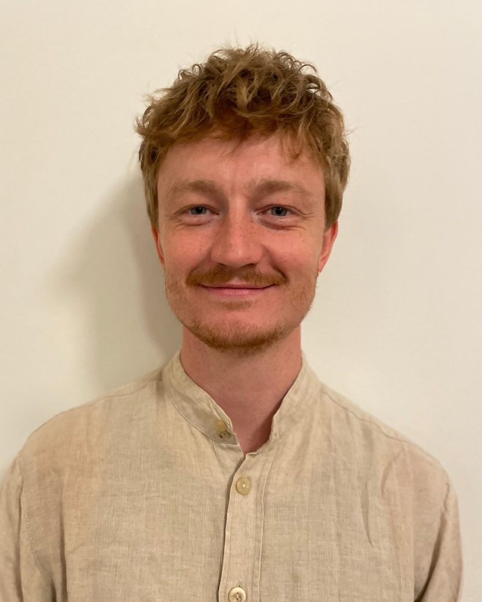

Nogle steder i os selv finder vi kun ved at mærke efter.
Jeg giver elevbehandlinger i kropsterapi på Frederiksberg. En behandling varer 75 minutter.
Hvad er en elevbehandling?
Jeg er Manuvision elev og giver Manuvision Elev kropsterapeutiske behandlinger som en del af min uddannelse. Derfor er prisen lavere end hos en færdiguddannet kropsterapeut.
Jeg arbejder med massage, berøring og åndedræt, og vi taler sammen, hvis du har lyst. Du kan komme med noget bestemt eller bare med lyst til at mærke efter.
Hvordan foregår det?
Vi starter med en snak om, hvordan du har det, og hvad du har lyst til i dag. Derefter ligger du på briksen i undertøj under et tæppe. Du bestemmer hele tiden, og vi kan stoppe eller gøre noget andet når som helst.
Til sidst får du tid til at lande, og vi taler kort om, hvad du har mærket.
Hvad hvis jeg bliver ked af det?
Så er der plads til det. Følelser kan dukke op, når man giver kroppen opmærksomhed, og du behøver ikke forklare dig.
Er du psykolog?
Nej. Jeg læser psykologi, men behandlingerne er kropsterapi og ikke psykologbehandling. Kropsterapi erstatter heller ikke en læge. Har du symptomer, du er bekymret for, så tal med din læge.

Hvem er jeg?
Jeg hedder Theis. Jeg læser psykologi på Københavns Universitet og er Manuvision elev. Ved siden af er jeg musiker og lydtekniker, og mindfulness og dans fylder meget i mit liv.
[Et par linjer med dine egne ord om, hvorfor du arbejder med kroppen.]
Pris
- Første behandling350 kr.
- Studerende og lav indkomst350 kr.
- Øvrige behandlinger450 kr.
Alle behandlinger varer 75 minutter og foregår på Frederiksberg. Du får adressen, når du booker. Betaling: [MobilePay?] Afbud: [senest 24 timer før?]
Find en tid
Vælg en ledig tid i min kalender. Jeg bekræfter din tid hurtigst muligt.
Spørgsmål først? Skriv til mig på Instagram, @theis.dynnesen, eller på [din e-mail].